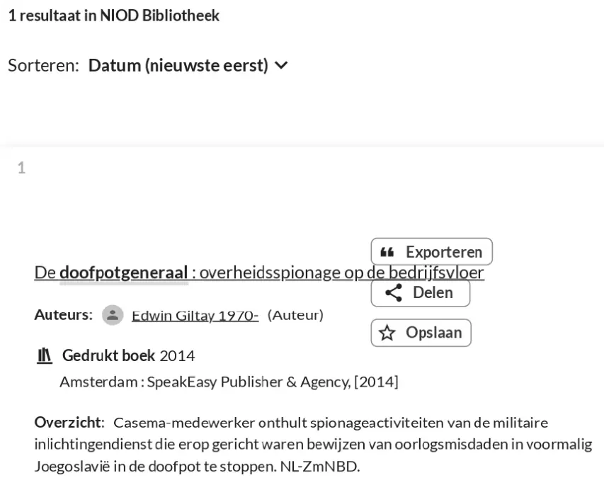

Bewijsstuk · Catalogusvermelding
Catalogusvermelding van de NIOD-bibliotheek, 2015
De passage
“1 resultaat in NIOD Bibliotheek · De doofpotgeneraal : overheidsspionage op de bedrijfsvloer · Auteurs: Edwin Giltay 1970- (Auteur) · Gedrukt boek 2014 · Amsterdam : SpeakEasy Publisher & Agency, [2014] · Overzicht: Casema-medewerker onthult spionageactiviteiten van de militaire inlichtingendienst die erop gericht waren bewijzen van oorlogsmisdaden in voormalig Joegoslavië in de doofpot te stoppen. NL-ZmNBD.” Pagina 1, de resultaatregel en de catalogusvermelding, veld voor veld: aantal resultaten, titel, auteur, vorm en jaar, plaats van uitgave en uitgever, en de samenvatting. De velden staan in de catalogusvermelding op aparte regels en zijn hier samengevoegd.

Waarom dit document telt
De bibliotheekcatalogus van het NIOD Instituut voor Oorlogs-, Holocaust- en Genocidestudies in Amsterdam geeft één resultaat, de druk van 2014, met de samenvatting die bij het boek staat en die eindigt op de code NL-ZmNBD. Die code geeft aan dat de samenvatting afkomstig is van NBD Biblion in Zoetermeer, de organisatie die voor de Nederlandse bibliotheken beschrijvingen van nieuwe boeken maakt. Het essay stelt dat het boek nu staat in de collecties die de geschiedenis bewaren waarover het gaat, waaronder die van het NIOD.
Herkomst
- Document
- Zoekresultaatpagina uit de catalogus van de NIOD-bibliotheek, opgeslagen als pdf
- Catalogusvermelding
- De doofpotgeneraal : overheidsspionage op de bedrijfsvloer, Edwin Giltay, gedrukt boek, Amsterdam: SpeakEasy Publisher & Agency, [2014]
- Berust bij
- NIOD Instituut voor Oorlogs-, Holocaust- en Genocidestudies, Amsterdam
- Datum
- Vermelding uit 2015, zoekresultaat opgeslagen op 23 maart 2026
- Taal
- Nederlands
- Webadres
- niod.on.worldcat.org, zoekopdracht ‘De doofpotgeneraal’
- Bron
- Pdf-afdruk op dedoofpotgeneraal.
nl/ doc/ niod.pdf
Aangehaald in: het essay ‘Het verbod viel, het boek bleef overeind’ in het hoofdstuk (9) ‘Voorgoed vastgelegd’.
Bewijsstukpagina: https://
Document: https://
Laatst gewijzigd 13 september 2026, geraadpleegd 3 oktober 2026.

Deze pagina is een bewijsstuk bij het boek De doofpotgeneraal van Edwin Giltay en de bijbehorende website.